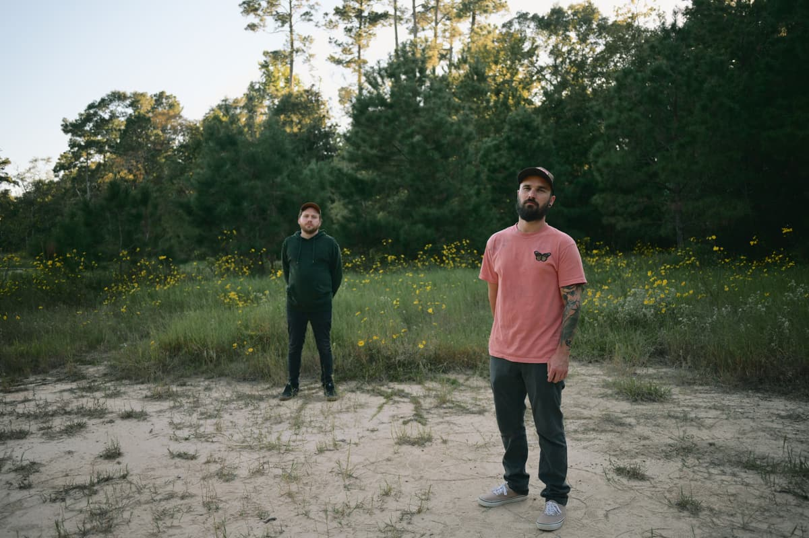
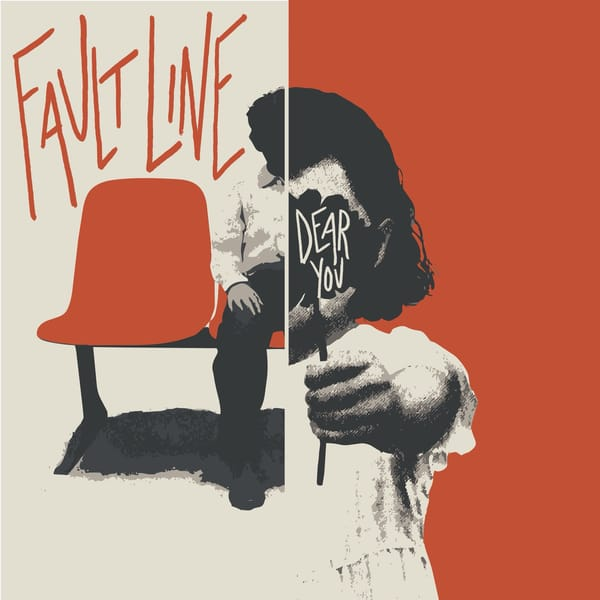
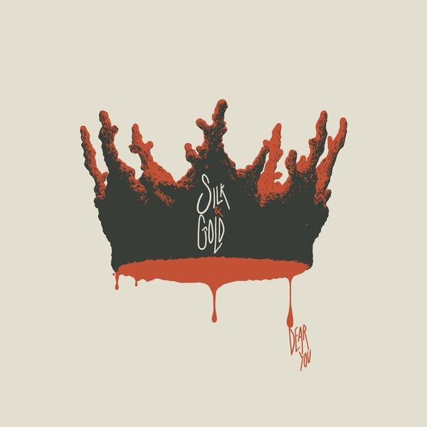

i must confess, what a mess.
listen
-

fault line
single · 2026 · out now -

silk & gold
single · out 10.23single · 2026 · out now
about
little pop punk band from big texas, with a lot to say.
water under the bridge, but it's dripping through the walls.
elsewhere
hear it
shirts and things you can hold.
shop.dearyoutx.com